Status-Sorted Diffusion Reproduces Occupational Hierarchy
Roberto Cantillan & Mauricio Bucca
Department of Sociology | Pontificia Universidad Católica de Chile
Occupations are evolving bundles of tasks and skills.
How is occupational skill content recomposed over time?
Weeden & Grusky 2005; Labussière & Bol 2026
Technological change makes the recomposition of occupational content consequential for inequality.
Autor, Levy & Murnane 2003; Acemoglu & Autor 2011; Goos, Manning & Salomons 2014; Eloundou et al. 2024
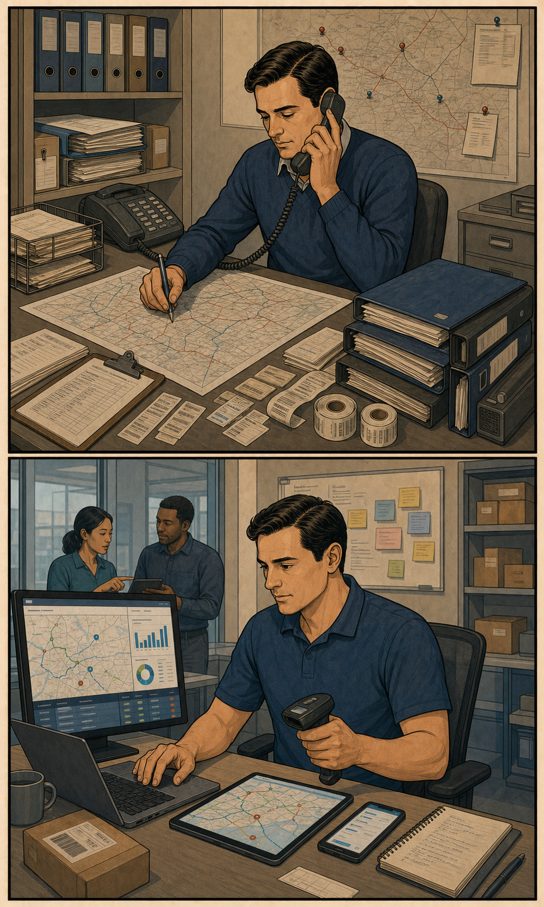
But realized occupational updating may be heterogeneous.
Autor 2015; Acemoglu & Restrepo 2020; Tong, Wu & Evans 2025; Han & Cheng 2026
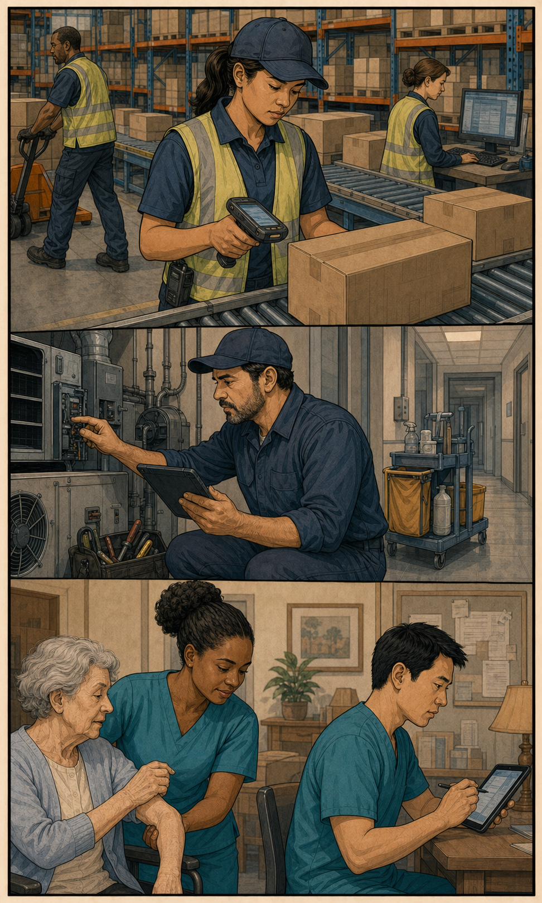
Changes in occupational content may be contingent on the functional domain and functional specificity of the skills involved.
Functional domain
Socio-cognitive vs. sensory-physical
Polarization
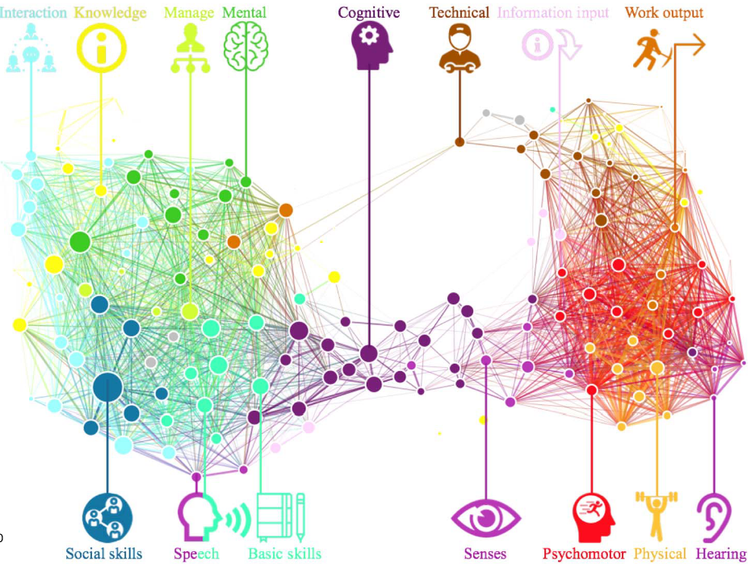
Alabdulkareem et al. 2018
Functional specificity
General vs. specialized
Hierarchical organization
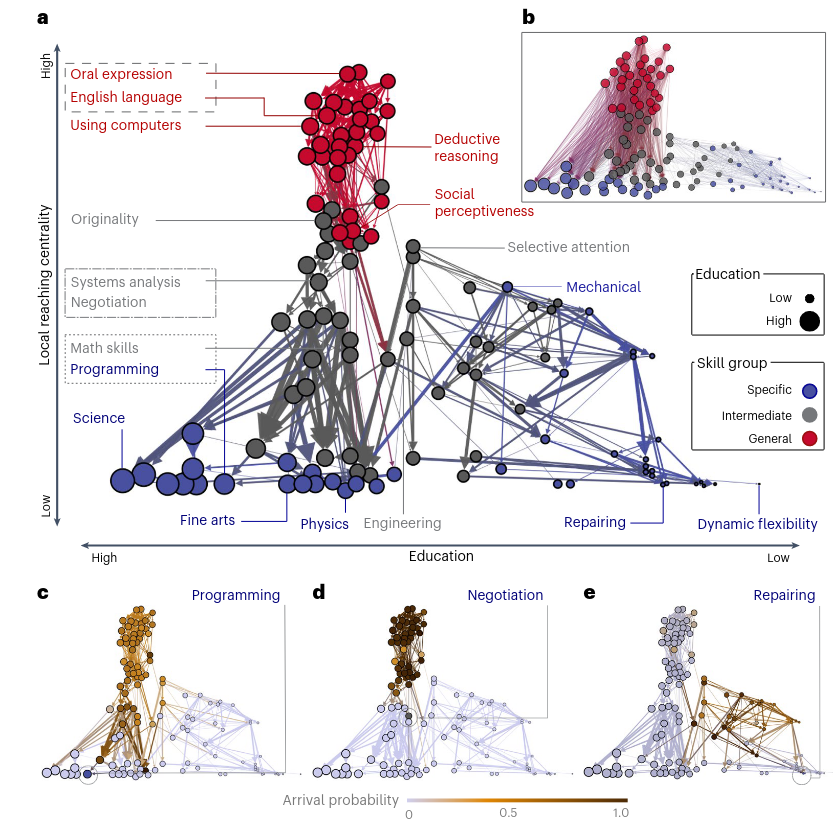
Hosseinioun et al. 2025
Relatedness connects; status directs.
Skill change depends on where an occupation sits relative to the skill’s current holders.
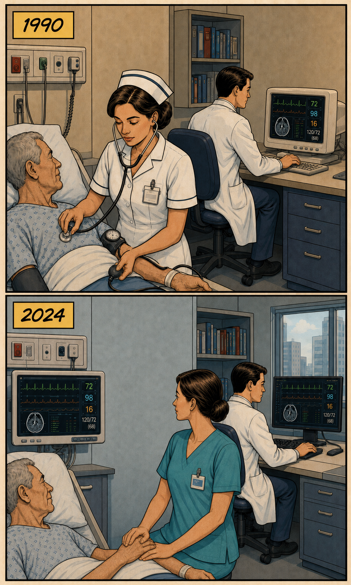
What we observe
Occupations gain and lose skill requirements over time.
What makes the change relational
Each changing skill is already held by a set of other occupations.
What we compare
The changing occupation’s position relative to those current holders.
Skill diffusion is the changing distribution of skill requirements across occupations, traced through gains and losses relative to the skill’s current holders.
Current holders are plausible sources for adoption and positional referents for abandonment; we do not observe direct transmission. Strang & Meyer 1993; Wimmer 2021
Task-profile proximity
Unsigned, symmetric distance: \(\mathrm{dist}_{ij}=\mathrm{dist}_{ji}\)
Standard gravity structure: interaction increases with origin and destination mass and decreases with their separation.
Gravity models: Tinbergen 1962; Kolaczyk & Csárdi 2020. Symmetric relatedness measure: Hidalgo et al. 2007.
Opposite directions, opposite status gaps: \(G_{ij}=-G_{ji}\)
Our main argument: skill diffusion is status-sorted and asymmetric.
Proximity and prestige in diffusion: Bail, Brown & Wimmer 2019.
1. Symmetry
Is realized skill updating symmetric with respect to occupational status, or is it status-directed?
2. Direction
If updating is status-directed, do skills flow predominantly upward or downward—and does this differ by skill type?
We do not adjudicate among the mechanisms directly. We establish whether updating is asymmetric and identify its predominant direction.
Baseline occupational status
We observe how occupational skill portfolios change over a decade.
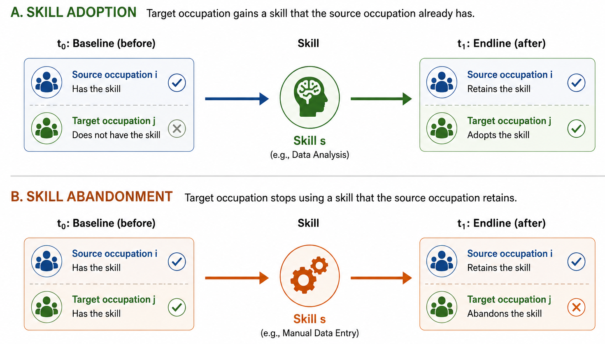
Holders: occupations that already have a skill.
Target: the occupation whose content changes.
Adoption: the target gains a skill its holders already have.
Abandonment: the target sheds a skill its holders retain.
Conceptual precedent for joint trajectories of adoption and abandonment: Strang & Macy 2001.
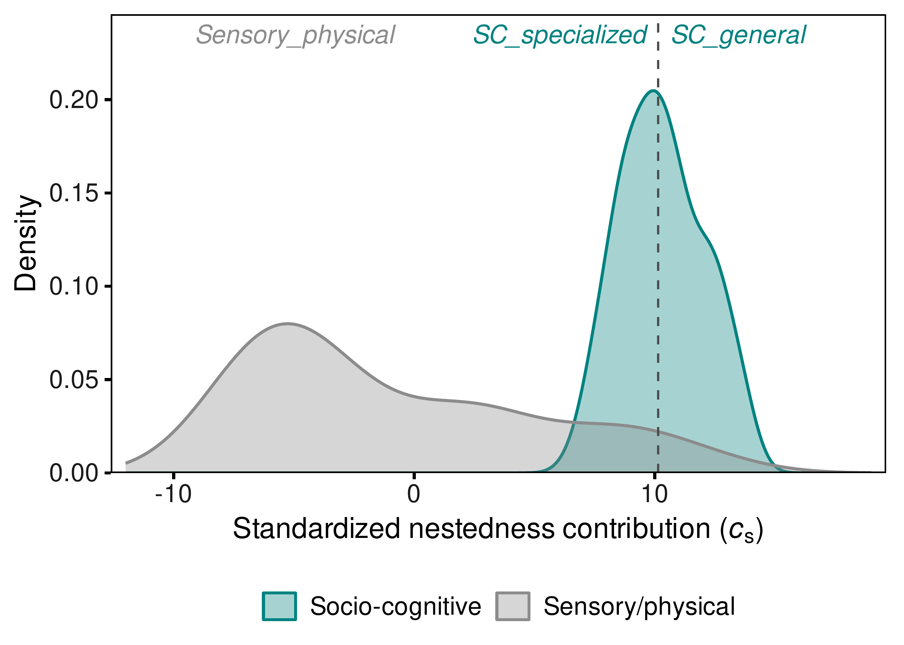
Domain: Alabdulkareem et al. 2018 · Nestedness/specificity: Hosseinioun et al. 2025
\[ \Lambda^f_{ijs} \propto \frac{M_i M_j}{D^f_{ij}} \]
NUMERATOR
\(M_i M_j\)
\(\downarrow\)
Occupational masses
May capture occupational size, centrality, or baseline propensity to send/receive.
Absorbed by endpoint fixed effects in our specifications
DENOMINATOR
\(D^f_{ij}\)
Effective separation has two components in our model:
The extension is asymmetric because \(G_{ij}=-G_{ji}\), even when profile distance is unchanged.
How likely is target occupation \(j\) to adopt or abandon skill \(s\)?
\[ \operatorname{cloglog}\Pr(Y^f_{ijs}=1) = \underbrace{\alpha_s+\alpha^{(p)}_{e}}_{\text{fixed effects}} + \underbrace{\delta^f_g\,\mathrm{dist}_{ij}}_{\text{profile relatedness}} + \color{#b33a3a}{ \underbrace{\beta^f_g\,G_{ij}}_{\text{directional status association}} }, \qquad G_{ij}=\sigma_j-\sigma_i \]
\(x<0\): target below source — borrowing from above | \(x>0\): target above source — borrowing from below
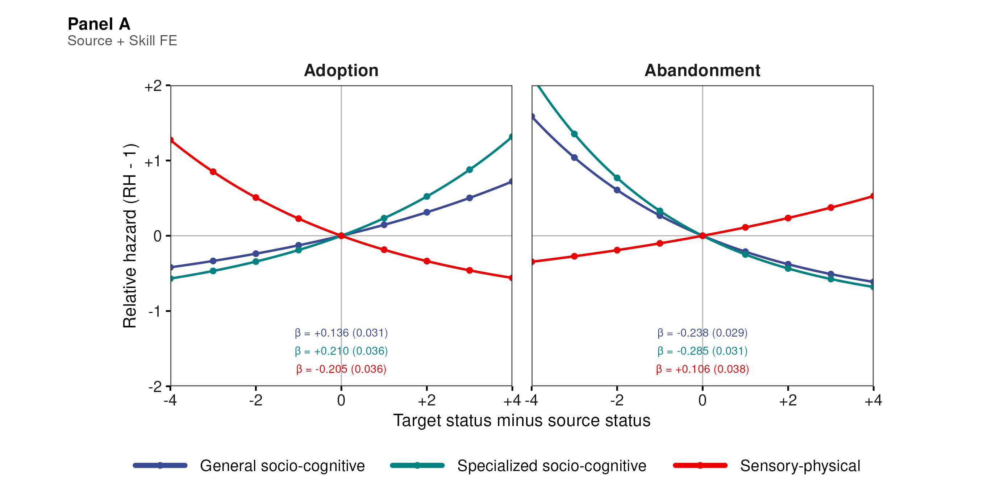
Socio-cognitive skills are adopted and retained upward; sensory-physical skills are adopted and retained downward.
Holding the target and skill fixed, identification comes from comparing sources above and below the same target.
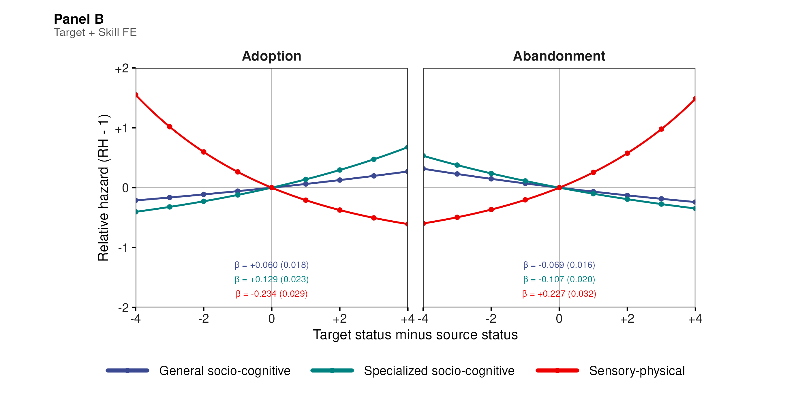
The signs are unchanged: the directional pattern is not a by-product of which occupations tend to change more.
Occupational characteristics
Size, centrality, and baseline propensity to send or receive skills cannot account for the result.
Endpoint fixed effects absorb these characteristics in complementary specifications.
Intrinsic skill characteristics
Prevalence, diffusibility, and other stable properties of the skill cannot account for the result.
Skill fixed effects compare relations involving the same skill.
The same domain reversal survives both fixed-effect comparisons.
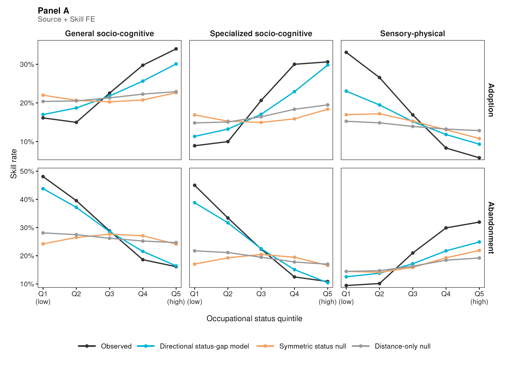
The directional status-gap model recovers the observed gradient; the symmetric and distance-only models do not.
Occupational content changes through two margins: adoption (the target adds a skill) and abandonment (the target sheds a skill).
Both margins are systematically directed by baseline occupational status.
Higher-status occupations disproportionately adopt and retain general and specialized socio-cognitive skills.
Lower-status occupations disproportionately adopt and retain sensory-physical skills.
The directional pattern remains when baseline status is constructed without cognitive content.
Together, these results reveal a Matthew-effect pattern in occupational skill diffusion: changing skill content accumulates along the preexisting occupational hierarchy.
External validation. An ESCO-based analysis provides partial validation using an occupational classification constructed independently of O*NET.
Technological pressure may raise demand for cognitive capabilities without redistributing them evenly across occupations
Lower-status occupations can face a compounded barrier: greater pressure to adapt, but weaker incorporation and retention of socio-cognitive content
This pattern is consistent with inequality being reproduced inside occupations, before workers move or jobs disappear
Occupational level: we do not observe individual workers or the organizational decisions behind skill changes
Observational design: estimates directional associations, not direct pairwise transmission or a unique causal mechanism
Institutional scope: U.S. occupational data; credentialing, wage-setting, and labor-market institutions may moderate the pattern
Roberto Cantillan
Department of Sociology, PUC Chile
rcantillan@uc.cl
Paper and Replication: github.com/rcantillan/skill_diffusion
| Main threat | Design response |
|---|---|
| A target-status gradient may look relational | Complementary source + skill and target + skill fixed-effect comparisons |
| RCA changes may reflect denominator drift | Fixed-2015 denominator check; raw-importance diagnostic |
| Skills with many sources may dominate the risk set | Equal target-skill weighting preserves all 24 slope signs |
| Results may depend on measurement choices | Threshold, status, taxonomy, and period sensitivity checks in the SI |
These checks address measurement and specification sensitivity. They do not establish direct transmission or a unique causal mechanism.
Revealed Comparative Advantage:
\[\mathrm{RCA}(j,s) = \frac{\mathrm{onet}(j,s)/\sum_{s'}\mathrm{onet}(j,s')}{\sum_{j'}\mathrm{onet}(j',s)/\sum_{j',s''}\mathrm{onet}(j',s'')}\]
Event definitions for skill s:
Directional gaps:
\[G_{ij} = \sigma_j - \sigma_i\]
The linear specification estimates one signed coefficient \(\beta_g\) for each skill class: \(\beta_g>0\) orients change toward higher-status targets; \(\beta_g<0\) orients it toward lower-status targets.
Functional domain:
Functional specificity:
\[c_s = \frac{\mathrm{NODF}_{\text{obs}} - \mathbb{E}[\mathrm{NODF}^{(s)}_{\text{rand}}]}{\mathrm{sd}[\mathrm{NODF}^{(s)}_{\text{rand}}]}\]
Three-class taxonomy:
The high-nestedness sensory-physical cell is empirically absent.
Linear signed-gap coefficients, Panel A: source + skill FE
| Skill type | Adoption β (SE) | Abandonment β (SE) |
|---|---|---|
| General SC | +0.136 (0.031) | −0.238 (0.029) |
| Specialized SC | +0.210 (0.036) | −0.285 (0.031) |
| Sensory-physical | −0.205 (0.036) | +0.106 (0.038) |
Linear signed-gap coefficients, Panel B: target + skill FE
| Skill type | Adoption β (SE) | Abandonment β (SE) |
|---|---|---|
| General SC | +0.060 (0.018) | −0.069 (0.016) |
| Specialized SC | +0.129 (0.023) | −0.107 (0.020) |
| Sensory-physical | −0.234 (0.029) | +0.227 (0.032) |
Cloglog hazard scale. One signed linear coefficient per skill class.
Step 1: Classic Gravity \[T_{ij} = k \cdot \frac{M_i M_j}{D_{ij}^{\gamma}} \quad \Rightarrow \quad \log \mathbb{E}[T_{ij}] = \beta_0 + \alpha_i + \beta_j - \gamma \log D_{ij}\]
Step 2: Triadic Extension \[\Lambda^f_{ijs} \propto \frac{M_i \cdot M_j \cdot S_s}{D_{ij}}\]
Step 3: Signed Status Friction \[G_{ij}=\sigma_j-\sigma_i\]
Step 4: Flow-specific distance \[-\log D^f_{ij} = \beta_g G_{ij} + \delta_g \mathrm{dist}_{ij}\]
Step 5: Full Specification \[\operatorname{cloglog}\big(P(Y^f_{ijs}=1)\big) = \alpha_{\mathrm{FE}} + \alpha_s + \beta_g G_{ij} + \delta_g\mathrm{dist}_{ij}\]
Main signed-gap gradients:
| Flow | Socio-cognitive | Sensory-physical |
|---|---|---|
| Adoption | Positive β | Negative β |
| Abandonment | Negative β | Positive β |
Interpretation:
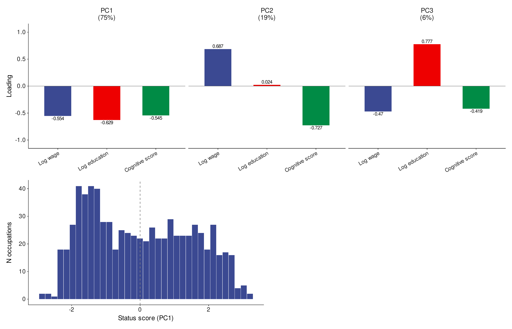
Competing directional expectations are consistent with different possible mechanisms.
Downward diffusion
Doctor holder \(\longrightarrow\) Nurse target
Strang & Macy 2001; Autor 2015; Tong et al. 2025; Han & Cheng 2026.
Upward diffusion
Nurse holder \(\longrightarrow\) Doctor target
Cohen & Levinthal 1990; Abbott 1988; Weeden 2002; Kleiner 2013; Deming 2017.
These are interpretive possibilities, not mechanisms we identify directly.
01
Occupational data
02
Directed design
03
Flow-specific risk sets
The target changes. The source locates that change relative to current holders.
Risk-set construction follows the source–target logic of directional diffusion: Bail, Brown & Wimmer 2019.
Panel A: Source + Skill FE
Panel B: Target + Skill FE
\(x<0\): target below source | \(x>0\): target above source
\(y\): relative hazard minus one, compared with an equal-status pair
The two panels change which endpoint is held fixed; they test the same signed source–target status association.
Independent classification. ESCO provides occupational–skill relations across releases from 2018 to 2024.
Independent construction. Skill communities and functional classes are reconstructed entirely within ESCO, without using O*NET classifications or labels.
Same design. We reproduce the directed source–target–skill opportunity design, using baseline ISEI-08 status.
Patterns reproduced. Higher-status occupations disproportionately adopt general and specialized socio-cognitive skills, while sensory-physical content is consolidated among lower-status occupations through abandonment toward the top.
Patterns not reproduced. Socio-cognitive abandonment and sensory-physical adoption gradients are not estimated precisely.
ESCO provides partial external validation in an occupational classification constructed independently of O*NET.
Autor, D. H., Levy, F., & Murnane, R. J. (2003). “The Skill Content of Recent Technological Change: An Empirical Exploration.” Quarterly Journal of Economics 118(4):1279–1333. doi:10.1162/003355303322552801.
Acemoglu, D., & Autor, D. (2011). “Skills, Tasks and Technologies: Implications for Employment and Earnings.” Handbook of Labor Economics 4:1043–1171. doi:10.1016/S0169-7218(11)02410-5.
Goos, M., Manning, A., & Salomons, A. (2014). “Explaining Job Polarization: Routine-Biased Technological Change and Offshoring.” American Economic Review 104(8):2509–2526. doi:10.1257/aer.104.8.2509.
Autor, D. H. (2015). “Why Are There Still So Many Jobs? The History and Future of Workplace Automation.” Journal of Economic Perspectives 29(3):3–30. doi:10.1257/jep.29.3.3.
Eloundou, T., Manning, S., Mishkin, P., & Rock, D. (2024). “GPTs are GPTs: Labor Market Impact Potential of LLMs.” Science 384(6702):1306–1308. doi:10.1126/science.adj0998.
Tong, D., Wu, L., & Evans, J. A. (2025). “Lower-Skilled Occupations Face Greater Upskilling Pressure in U.S. Job Ads.” Nature Communications 17:1237. doi:10.1038/s41467-025-67992-y.
Han, S., & Cheng, S. (2026). “Skill Diversification Beyond High-Paying Jobs.” American Journal of Sociology. doi:10.1086/741725.
Weeden, K. A., & Grusky, D. B. (2005). “The Case for a New Class Map.” American Journal of Sociology 111(1):141–212.
Labussière, M., & Bol, T. (2026). “Are Occupations ‘Bundles of Skills’? Identifying Latent Skill Profiles in the Labor Market Using Topic Modeling.” Sociological Science 13:362–407. doi:10.15195/v13.a16.
Alabdulkareem, A., Frank, M. R., Sun, L., AlShebli, B., Hidalgo, C., & Rahwan, I. (2018). “Unpacking the Polarization of Workplace Skills.” Science Advances 4(7):eaao6030. doi:10.1126/sciadv.aao6030.
Hidalgo, C. A., Klinger, B., Barabási, A.-L., & Hausmann, R. (2007). “The Product Space Conditions the Development of Nations.” Science 317(5837):482–487. doi:10.1126/science.1144581.
Tinbergen, J. (1962). Shaping the World Economy: Suggestions for an International Economic Policy. New York: Twentieth Century Fund.
Kolaczyk, E. D., & Csárdi, G. (2020). Statistical Analysis of Network Data with R. 2nd ed. Cham: Springer. doi:10.1007/978-3-030-44129-6.
Hosseinioun, M., Neffke, F., Zhang, L., & Youn, H. (2025). “Skill Dependencies Uncover Nested Human Capital.” Nature Human Behaviour. doi:10.1038/s41562-024-02093-2.
Strang, D., & Meyer, J. W. (1993). “Institutional Conditions for Diffusion.” Theory and Society 22(4):487–511. doi:10.1007/BF00993595.
Strang, D., & Macy, M. W. (2001). “In Search of Excellence: Fads, Success Stories, and Adaptive Emulation.” American Journal of Sociology 107(1):147–182. doi:10.1086/323039.
Cheng, S., & Park, B. (2020). “Flows and Boundaries: A Network Approach to Studying Occupational Mobility in the Labor Market.” American Journal of Sociology 126(3):577–631. doi:10.1086/712406.
Lin, K.-H., & Hung, K. (2022). “The Network Structure of Occupations: Fragmentation, Differentiation, and Contagion.” American Journal of Sociology 127(5):1551–1601. doi:10.1086/719407.
Bail, C. A., Brown, T. W., & Wimmer, A. (2019). “Prestige, Proximity, and Prejudice: How Google Search Terms Diffuse across the World.” American Journal of Sociology 124(5):1496–1548. doi:10.1086/702007.
Wimmer, A. (2021). “Domains of Diffusion: How Culture and Institutions Travel around the World and with What Consequences.” American Journal of Sociology 126(6):1389–1438. doi:10.1086/714273.
Cantillan & Bucca | RC28 NYU 2026